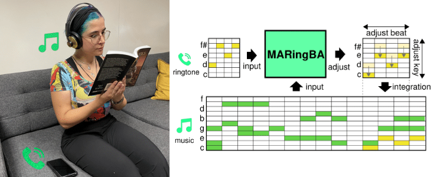
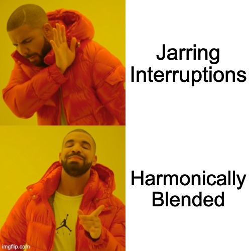
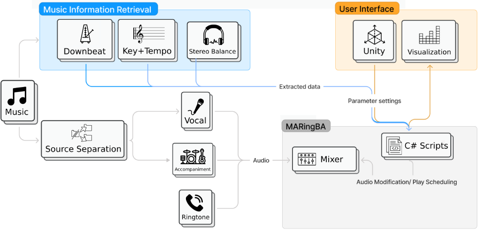
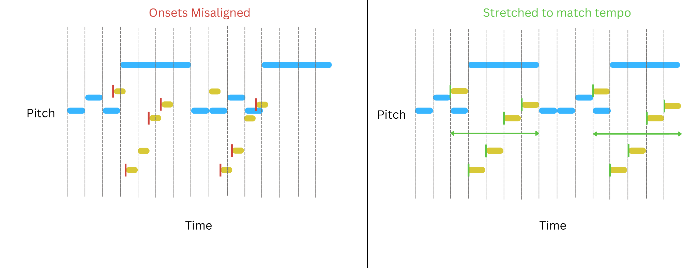
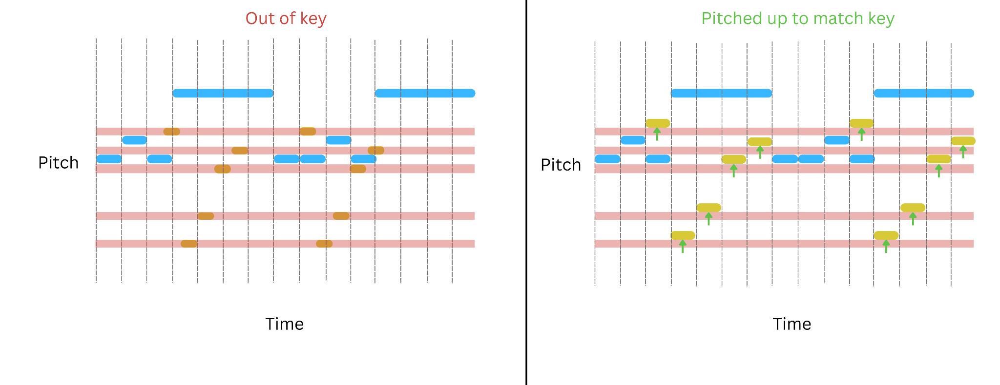
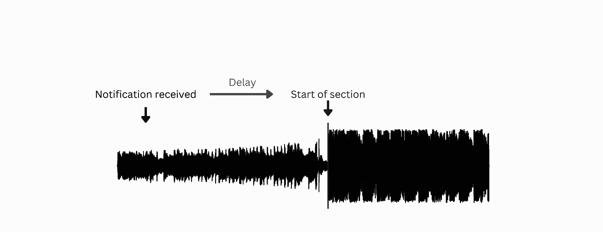
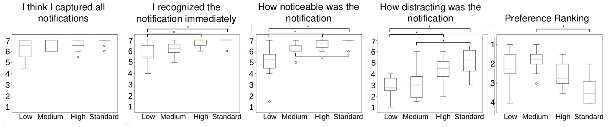

CHI 2024 — ACM Conference on Human Factors in Computing Systems
🏆 Best Paper Honorable Mention (top 5%)

We explore a design space for adapting audio notifications and present MARingBA, a system that adapts audio notifications to be seamlessly blended into music with controllable levels of saliency. In a study with 12 users, we demonstrate that our technique successfully modulates user response time as well as their perceived level of noticeability, immediacy, and distraction.
Hotline Bling — Drake
iPhone ringtone (Classic)
What Is Love — Haddaway
Google Hangouts notification
Happy — Pharrell Williams
Discord notification
Somebody That I Used to Know — Gotye
iPhone ringtone

Today's audio notifications are largely one-size-fits-all. In contrast, visual notifications span a range of saliency, from subtle indicators like Slack's red dot, to banners, to full pop-up alerts. MARingBA brings this idea to audio by introducing multiple ways to deliver notifications, allowing less important alerts to blend into the music instead of causing abrupt interruptions.
Note For low and medium saliency, scheduling may delay the actual notification by a few seconds past the marker.
MARingBA takes the music you're already listening to and an incoming notification, analyzes the music, and reshapes the notification to blend in. Here is each step, with audio.
Inputs
The music the listener is playing, and an incoming notification — here, the Google Hangouts ringtone.
Analyze musical features
We extract the music's beat, key, and structure — the scaffolding used to reshape and place the notification in the steps below.

Beat matching
Overlaid naively, the ringtone fights the groove. Aligning it to the beat lets it lock in with the music.

Key matching
Beat-aligned but still clashing harmonically. Pitch-shifting the ringtone into the song's key makes it consonant.

Schedule to song structure
We place the notification at a natural moment in the song's structure rather than cutting in arbitrarily.

Adjust timbre
Finally, we shape the ringtone's timbre so it sits inside the mix — controlling just how much it stands out.
Our evaluation showed that MARingBA successfully modulated the saliency of audio notifications. Lower-priority notifications were noticed later and perceived as less distracting without compromising users' confidence that they had heard every notification. Participants also preferred our integrated adaptation over conventional notification delivery.

@inproceedings{wang2024maringba,
title = {MARingBA: Music-Adaptive Ringtones for Blended Audio Notification Delivery},
author = {Wang, Alexander and Cheng, Yi Fei and Lindlbauer, David},
booktitle = {Proceedings of the 2024 CHI Conference on Human Factors in Computing Systems},
year = {2024},
doi = {10.1145/3613904.3642376}
}